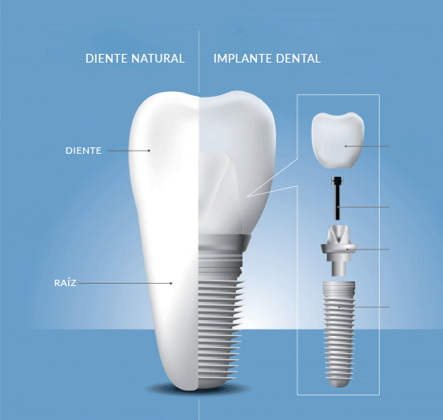

Implantes Dentales
En Clínica Alisio ofrecemos un tratamiento de implantes dentales integral, adaptado a cada paciente, con un enfoque accesible, profesional y humano.
Nuestro equipo utiliza tecnología de última generación y materiales de alta calidad para restaurar la función y estética dental con resultados duraderos y naturales.
- Planificación digital 3D
- Cirugía guiada
- Sedación consciente
- Implantes sin dolor

¿Por qué elegirnos?
Nos diferenciamos por nuestro compromiso con la inclusividad y el confort del paciente:
- Clínica accesible para personas con movilidad reducida
- Tratamiento adaptado para pacientes con necesidades especiales
- Acompañamiento personalizado antes, durante y después de la intervención
Detalles del procedimiento
- Duración: 1-2 horas
- Anestesia: local o con sedación
- Hospitalización: no requerida
- Recuperación: 7-10 días
- Resultados: visibles desde los 3 meses